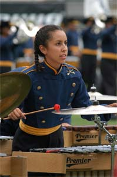

2004 Troopers Program
The 2004 Troopers program is "The Troopers Are Coming!"
Looking to present a more fully realized production, the show will be presented in 3 scenes as opposed to a series of musical pieces. The scenes will meld together to seamlessly present a day in the life of the Cavalry on the prairie in the 1870's over the course of 11 minutes.
In the first scene we see the charge of the cavalry, caught in the middle of a particularly intense moment in battle. Listen for familiar snippets of pieces weaving in and out of the presentation. If you're a fan of Western movies in the past 40 years, your ears will be put to the test! The second scene is will see the troops on some well-deserved time off in the town. After reveling with the locals, the mood shifts back into high gear in the 3rd scene as the cavalry is once again called to duty in the always-wild West.
With a great wealth of music to choose from, the corps is determined to ride once again into the hearts of fans across the country, using familiar themes, traditional uniforms, and an aggressive approach that respects the traditions of the past and the innovation of the future in a perfect marriage on the field:
Ladies and Gentlemen, "The Troopers Are Coming!"
On The Web